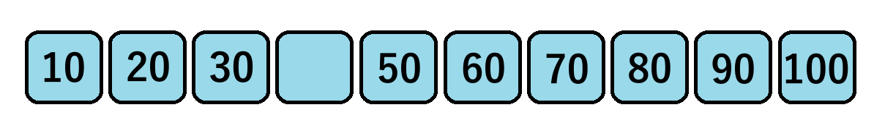

Yak ta meubileueng deungön keulompok puluhan

Angka padum di ateuh nyang gadöh?
Piléh 1 jawaban ji yup nyoe
2. Keulompok angka puluhan nyang töh ji yup nyoe nyang jumlahjih 20?
Piléh 1 jawaban
3. Peuduek keulompok angka puluhan bak kotak ji yup nyoe sehingga jumlahjih jeuet keu 40